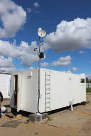
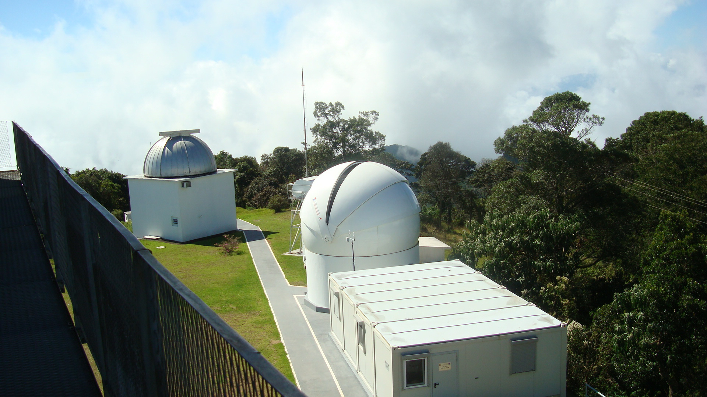
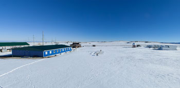
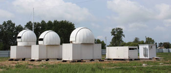

Акционерное общество «Астрономический научный центр» образовано в 2011 году без участия иностранного капитала и является специализированным российским предприятием, ориентированным на:
Акционерное общество «Астрономический научный центр» образовано в 2011 году без участия иностранного капитала и является специализированным российским предприятием, ориентированным на: - создание и эксплуатацию автоматизированных оптико-электронных систем наблюдения за космическими объектами (искусственного и естественного происхождения) высокой заводской готовности в т.ч. перебазируемых (автомобильным, железнодорожным, воздушным и морским транспортом);
- создание автоматизированных систем обработки информации о космических объектах осуществляющие орбитальный полет, сопутствующие им в запуске элементы конструкции, фрагменты их разрушений искусственного и естественного происхождения;
- сопровождение библиотеки алгоритмов баллистики и небесной механики;
- оценку космической обстановки по траектории выведения и орбитального движения космических аппаратов в интересах спутниковых операторов.
Пример работы телескопов
Экспериментальный оптический пункт первой очереди (ЭОП-1) предназначен для:
- автономного обнаружения и последующего сопровождения космических объектов, в том числе фрагментов космического мусора, на низких, геостационарных, круговых полусуточных и высокоэллиптических орбитах;
- определения угловых координат и фотометрических характеристик обслуживаемых КО;
- оперативного отождествления (идентификации) обнаруженных космических объектов с КО из локальной базы данных ОЭК;
- выдачи полученной информации для обработки и анализа.


Технические возможности ЭОП-1
Зоной контроля ЭОП является верхняя полусфера, ограниченная минимальным углом места 12 градусов и высотами от 120 км до 200000 км. Оборудование ЭОП позволяет проводить автономный поиск КО в геостационарной области контроля, представляющей собой приэкваториальную область космического пространства на высотах от 30 000 км до 40 000 км и негеостационарной области контроля, представляющей собой часть зоны контроля ЭОП на высотах от 3500 км до 50000 км. ОЭК-40 с полем зрения 2.2х2.2 градуса предназначен для сопровождения фрагментов космического мусора на геостационарной и высокоэллиптических орбитах, ОЭК-25 с полем зрения 3.4х3.4 градуса может использоваться как для проведения обзоров геостационарной орбиты, так и для наблюдения ярких объектов на всех типах орбит по целеуказаниям. Сдвоенный телескоп ОЭК-19,2х2 с полем зрения 7х15 градусов предназначен для проведения обзоров высокоэллиптических орбит и для расширенных обзоров геостационарной области (расширенные обзоры позволяют значительно повысить точность определения орбит ГСО-объектов и лучше выявлять маневры КА в кластерах), а также для обработки барьерных наблюдений низкоорбитальных объектов
Экспериментальный оптический пункт второй очереди (ЭОП-2) предназначен для автономного обнаружения, обнаружения в локальных зонах по целеуказаниям и последующего сопровождения космических объектов, в том числе фрагментов космического мусора, на низких, круговых полусуточных и высокоэллиптических орбитах.
Технические возможности ЭОП-2
- автономный поиск КО в негеостационарной области контроля, представляющей собой часть зоны контроля ЭОП2 на высотах от 3500 до 50000 км (область высокоэллиптических орбит с высотами апогея от 25000 до 50000 км, эксцентриситетами ≥0.2; область околокруговых орбит с высотами от 19000 до 21000 км, область прочих высокоорбитальных КО с высотами апогея более 3500 км с наклонениями от 0 до 180°), переориентируемую в пределах зоны контроля ЭОП2;
- поиск КО по ЦУ в диапазоне высот от 200 км до 200000 км.;
- получение координатной и некоординатной информации о КО в пределах зоны действия.
В настоящее время изготовлены два ЭОП-2, которые находятся в опытной эксплуатации в интересах Роскосмоса на двух площадках:
1. Кисловодская обсерватория АО «АНЦ» (в районе города Кисловодск, Карачаево-Черкесия, гора Шидзатмаз);
2. Благовещенская обсерватория АО «АНЦ» (в районе города Благовещенск, Амурская область).

Оптические пункты наблюдения

Телескоп - VT-78 (19.2 см)

Телескоп - ORI-22 (22 см)

Телескопы:
- ORI-25 (25 см);
- ORI-22 (22 см).

Телескоп - ORI-25 (25 см)

Телескоп - ORI-22 (22 см)

Телескоп - ORI-22 (22 см)
Эксперементальная база ЗАО "АНЦ"
АО «АНЦ» имеет собственные обсерватории, размещенные в Карачаево-Черкессии (гора Шидзатмаз) и в районе г. Благовещенск Амурской области. Кроме этого, опытная эксплуатация экспериментальных оптических средств,специального программного обеспечения и методик наблюдения за космическимиобъектами, созданных для Роскосмоса осуществляется специалистами АО «АНЦ» в Бюраканской астрофизической обсерватории (с. Бюракан, Республика Армения), пункте наблюдения Абрау-Дюрсо и др.
Гора (вершина): Шиджатмаз. Альтернативное название: Gora Shidzhatmaz. Регион: Республика Карачаево-Черкесия
Расположение:
- Широта (с.ш.) 43°43'50";
- Долгота (в.д.) 42°39'40";
- Высота над уровнем моря (м). 1908.

Амурская область, Благовещенский р-н Грибский сельсовет, с. Передовое
Расположение:
- Широта (с.ш.) 50°07'37";
- Долгота (в.д.) 127°43'20" в. д. ;
- Часовой пояс UTC+9.
